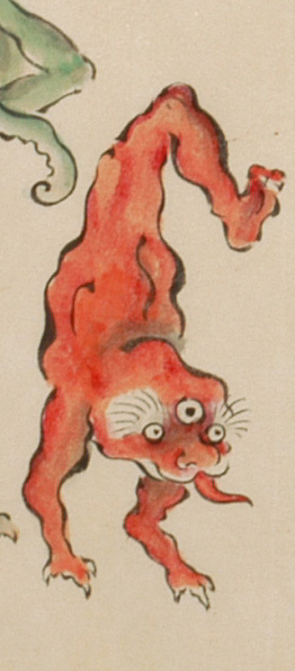

逆立ちをしている、三つ目で足が一本の化物。全身が赤い。髪の毛はなく、額に大きな丸い3つめの目玉がついている。眉毛が長く逆立ち、両目は離れて丸い。鼻の下が割れて、先の尖った赤い舌を伸ばしている。顔は獣のように見える。両腕は3本指で、鋭い爪が生えている。
出典：親書誌：U426_nichibunken_0053：化物婚礼絵巻；バケモノコンレイエマキ／日付：2006／資源識別子：U426_nichibunken_0053_0025_0001
Copyright (c)2010- International Research Center for Japanese Studies, Kyoto, Japan. All rights reserved.